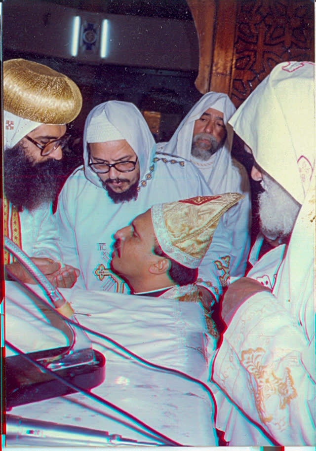
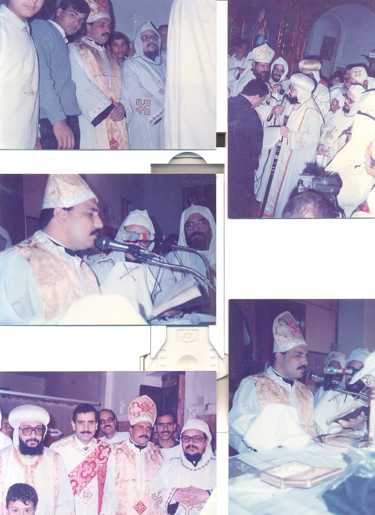
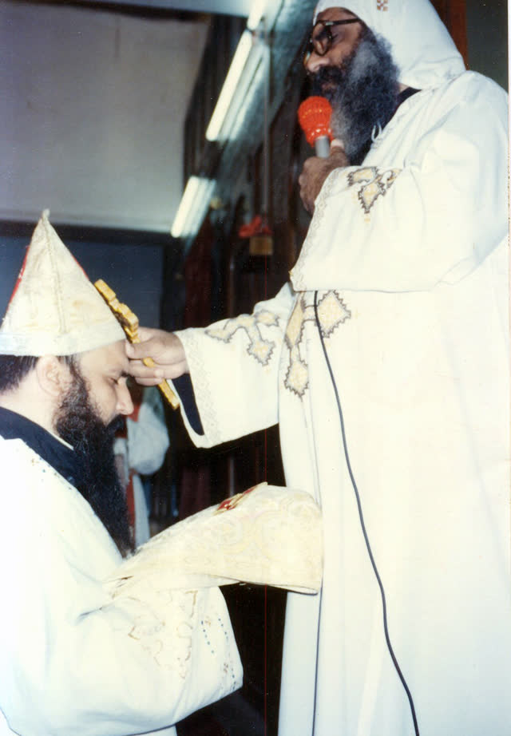

Home › Fr Wissa Sobhy Tadros

Fr Wissa Sobhy Tadros
Hegumen of the Church of the Virgin Mary, Deir Mawas — priest since 11 February 1991
Born in Tanta in 1956, he was discipled by Metropolitan Agabius and moved with him to Deir Mawas, where Agabius ordained him priest in 1991 and raised him to hegumen in 1997; he then served as deputy of the Metropolis of Deir Mawas and Delga for twenty-eight years. More than 35 years of priesthood, and church service that began in his youth.
Documented biography
From Tanta to Deir Mawas
Father Wissa Sobhy Tadros was born in Tanta on December 4, 1956 and earned a Bachelor of Commerce from Tanta University in 1980. The archive records his connection with Deir Mawas from 1988 and his priestly ordination on February 11, 1991 by Anba Agabius and Anba Thomas, Bishop of El-Qusiya.
After ordination, he spent a spiritual retreat at the Monastery of the Virgin Mary in Al-Muharraq before beginning his priestly ministry in the Diocese of Deir Mawas and Delga. He was elevated to the rank of hegumen on June 22, 1997. His engagement took place on January 3, 1991, and he married Caroline Makram Ghali on February 10, 1991.
Birth and early life
Lay name: Samir Sobhy. Date of birth: December 4, 1956. Place of birth: Tanta, Gharbia Governorate.
Education and formation
He completed his secondary education in Tanta (the family account indicates 1975; the exact year is still being documented against an official record), then earned a Bachelor of Commerce from Tanta University in 1980. Before ordination he was active in church service, Sunday-school education, visitation and retreats.
Ordination and the beginning of ministry
On February 11, 1991 he was ordained a priest by Anba Agabius and Anba Thomas, Bishop of El-Qusiya. A spiritual retreat at the Monastery of the Virgin Mary in Al-Muharraq followed, and he began his priestly ministry in March 1991.
Current and former roles
Current: Hegumen of the Church of the Virgin Mary, Deir Mawas.
Former administrative role: Vicar of the Diocese of Deir Mawas, 22 June 1997 – 5 February 2025. This is preserved as a historical position and is not presented as his current title.
Key facts
- Birth: December 4, 1956 • Tanta
- Education: Bachelor of Commerce • Tanta University • 1980
- Marriage: Caroline Makram Ghali — February 10, 1991
- Priestly ordination: February 11, 1991
- Hegumen: June 22, 1997
Service
A multi-dimensional ministry
The archive records pastoral service alongside administrative responsibility, church documentation, public communication and participation in historically significant periods in Deir Mawas and Delga.
- Pastoral care, visitation, education and daily priestly ministry.
- Church and administrative responsibilities within the diocese.
- Documentation related to church records, marriage and personal-status matters.
- Institutional communication and participation in church projects.
- Presence at diocesan occasions and service.
- Hegumen of the Church of the Virgin Mary, Deir Mawas Current
- Diocesan vicar Former • 22 June 1997 – 5 February 2025
A relationship of discipleship and service that ran from 1988 to 2025
His spiritual father and teacher, Metropolitan Agabius
Fr Wissa moved with his spiritual father and teacher Metropolitan Agabius from Tanta to Deir Mawas in 1988 as a disciple preparing for the priesthood; Agabius laid hands on him as priest on 11 February 1991, raised him to the hegumenate on 22 June 1997 and entrusted him with the deputyship of the Metropolis. Twenty-eight years of shared ministry in pastoral care, documentation and visitation across the cities and villages of the diocese, until Metropolitan Agabius departed in the Lord on 4 February 2025.
Timeline
One timeline of the life
As documented in the archive's sources, listed at the foot of this page.
- Tuesday 4 December 1956Born in TantaSamir Sobhy was born in the El-Hekma district of Tanta — 25 Hator 1673 AM, the commemoration of the martyrdom of St. Mercurius Abu Seifein.
- 1980Commerce degreeGraduated from the Faculty of Commerce, Tanta University.
- 1988Move to Deir MawasMoved to serve with his teacher, Anba Agabius, in preparation for ordination. Anba Agabius was consecrated bishop of the diocese the same year.
- Thursday 3 January 1991Engagement25 Kiahk 1707 AM, the commemoration of the departure of St. Anba Yuhanna Kama.
- Sunday 10 February 1991Marriage3 Meshir 1707 AM — he married Caroline Makram Ghali.
- Monday 11 February 1991Priestly ordination4 Meshir 1707 AM — ordained "Fr. Wissa Sobhy" by the laying on of hands of Anba Agabius and Anba Thomas, Bishop of El-Qusiya.
- Friday 1 March 1991Receiving the sacrifice at Al-Muharraq22 Meshir 1707 AM, the commemoration of the martyrdom of St. Marutha, Bishop of Martyropolis — the liturgy of receiving the sacrifice at the Monastery of the Virgin Mary, Al-Muharraq.
- Thursday 21 March 1991Service begins in the diocese12 Baramhat 1707 AM, the monthly commemoration of Archangel Michael — returned from Al-Muharraq and began serving in Deir Mawas and Delga.
- 1991Documentation and marriage officeSada El-Balad (2026) credits him with founding the Metropolitanate's documentation and marriage office.
- Sunday 22 June 1997Hegumen15 Paona 1713 AM — raised to hegumen. The deputyship dates from here.
- 2016Father Wissa's jubileeHeld at the Archangel Michael Cathedral in Tanta with well-wishers and the fathers of the Diocese of Tanta.
- 4 February 2025Repose of Anba AgabiusThe deputyship ends on 5 February 2025.
- 1 June 2025Consecration of Anba BoktorConsecrated bishop of the Diocese of Deir Mawas and Delga by Pope Tawadros II; before consecration he was a monk of St. George Monastery, El-Khatatba, under the name Fr. Daniel El-Gurgi (official Coptic Orthodox Church website; Watani, 1 June 2025).
- 19 June 2025Enthronement of Anba Boktor at the Church of the Virgin Mary, Deir MawasThe enthronement service was led by Anba Demetrius, Metropolitan of Mallawi, papal vicar of the diocese since February 2025, at the Church of the Virgin Mary in Deir Mawas (Al-Masry Al-Youm, 19 June 2025).
- 2 August 2025Ordination of six hegumens at the Church of the Virgin Mary, Deir MawasAnba Boktor elevated six diocesan priests to the rank of hegumen and consecrated a deaconess for service, at the Church of the Virgin Mary in Deir Mawas (Watani and Sada El-Balad, August 2025).
- 5 October 2025Receiving the Al-Azhar graduates delegationUnder the patronage of Anba Boktor, Fr. Wissa took part with Fr. Sourial, vicar of the Metropolitanate, in receiving the Minya-branch delegation of the World Organization for Al-Azhar Graduates at the Deir Mawas Metropolitanate, affirming national unity (the Organization's official website, 5 October 2025).
- April 202635 years since ordinationThe Diocese of Deir Mawas marked 35 years since his ordination (Sada El-Balad, 8 April 2026).
From the family archive
Photos from memory
Photos from the family archive; how they are matched to occasions is explained in the attribution note on the Photos & Recordings page.




Sources for this page
- DirectoryFr. Wissa Sobhy's entry in the St-Takla.org directory.
- PressSada El-Balad's coverage of the diocese's celebration of 35 years since his ordination, April 2026.
- Family archiveFr. Wissa's data record and occasion photos, the engagement, marriage and sacrifice-receipt dates document, and the family statement on the deputyship start and end dates.
Related pages in the archive
The late Met. Agabius
Metropolitan of Deir Mawas and Delga 1988–2025; ordained him priest and hegumen and made him deputy of the Metropolis.
Open the page → Current bishop of the dioceseHG Bishop Boktor
Bishop of Deir Mawas and Delga since 1 June 2025, succeeding Metropolitan Agabius.
Open the page → Historical contextHistory of the Diocese of Deir Mawas and Delga
From the unified see to the founding of the diocese and its modern leadership.
Open the page → MediaPhotos & Recordings
Ordination, hegumenate and service albums, and the published recordings.
Open the page →